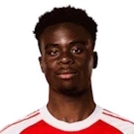

Anglie na MS 2026: Konečně přinesou titul domů?
Anglie sahala po finále MS 2026 až do 85. minuty: vedla po gólu Gordona, pak Argentina otočila na 2:1. V sobotu 18. července hraje s Francií o třetí místo.

Semifinále a boj o bronz
Anglie sahala po finále MS 2026 až do 85. minuty: vedla po gólu Gordona, pak Argentina otočila na 2:1. V sobotu 18. července hraje s Francií o třetí místo.
Anglie na MS 2026: přehled
Příští zápas je venku Francia 18/07/2026.
Klíčoví hráči
Hráči podle výkonu a odehraných minut.





Anglie: zápasy na MS 2026
Dosavadní průběh turnaje — 5 výher, 1 remíz a 1 proher.
2026
 ArgentinaDomácí
ArgentinaDomácí2026
 NorvegiaHosté
NorvegiaHosté2026
 MessicoHosté
MessicoHosté2026
 RD CongoDomácí
RD CongoDomácí2026
 PanamaHosté
PanamaHosté2026
 GhanaDomácí
GhanaDomácí2026
 CroaziaDomácí
CroaziaDomácíSilné a slabé stránky
Silné stránky. Útok šlape: 14 gólů, Kane a Bellingham po šesti. Lavička zůstává nejhlubší v turnaji a tým v semifinále dlouho vedl.
Slabé stránky. Osm inkasovaných gólů, nejhorší obrana top 4 — argentinský obrat za pět minut je přesný obraz problému.
Anglie: Vyhraje zápas o 3. místo
| Pravděpodobnost | Kurz | ||
|---|---|---|---|
| Vyhraje zápas o 3. místo | 25% | 3,79 |
Výsledek v 90 minutách. Průměrné orientační kurzy — průběžně se mění.
Klíčoví hráči týmu
Pod vedením trenéra Thomas Tuchel jsou klíčovými hráči Harry Kane, Jude Bellingham, Cole Palmer.
Zbývající program
2026
 Francia
FranciaHistorie na MS
Jediný titul v roce 1966 doma. Finalista Euro 2020 a 2024 — s dlouhou historií zklamání v turnajích.
Tip na zápas o bronz
Zápas o bronz s Francií (kurz 3,79) je šance zakončit solidní turnaj na stupních vítězů. V roce 2018 malé finále Anglii nevyšlo — je co vracet. Kurzy jsou orientační a mohou se měnit.
Anglie · kurz 3,79Ostatní favorité


Časté dotazy
Může Anglie ještě vyhrát MS 2026?
Ne, v semifinále prohrála 1:2 s Argentinou. V sobotu 18. července hraje s Francií o bronz.
Kdy hraje Anglie o 3. místo?
V sobotu 18. července ve 23:00 SELČ proti Francii. Kurz na výhru Anglie je zhruba 3,79.
Kdo jsou nejlepší střelci Anglie?
Kane a Bellingham, oba po šesti gólech — dohromady 12 ze 14 anglických branek.
Kdo je trenérem Anglie?
Thomas Tuchel.
Letos zase ne – a bolet to bude dlouho. Anglie v semifinále s Argentinou vedla od 55. minuty gólem Gordona a sahala po prvním finále mistrovství světa od roku 1966. Pak přišlo pět minut, které rozhodly o všem: Enzo Fernández srovnal v 85., Lautaro Martínez v 90. dokonal obrat. 1:2, konec snu, „football's coming home" se odkládá. Zbývá poslední zápas: v sobotu 18. července od 23:00 SELČ se hraje o bronz proti Francii – a je to duel s větším nábojem, než malá finále mívají.
Co se stalo v semifinále
Byl to přesně ten zápas, kterého se anglický fanoušek bál: vyrovnaný, nervózní, proti obhájci s neprůstřelnou mentalitou. Anglie ho přitom dlouho zvládala – Gordon trestal v 55. minutě a Three Lions drželi Argentinu na distanc. Jenže poslední čtvrthodina odhalila starý problém: tendenci pouštět soupeře zpátky do zápasu. Šest minut od konce srovnal Enzo Fernández, v devadesáté rozhodl Lautaro Martínez. Obrat za pět minut – rychlejší konec si neumíš představit.
Krutá tečka za jinak povedeným turnajem. Tahle Anglie byla finále blíž než kterákoliv od roku 1966 – reálně, ne řečnicky.
Forma na turnaji
Cesta pavoukem byla nejdivočejší ze všech semifinalistů:
- 4:2 s Chorvatskem
- 0:0 s Ghanou
- 2:0 s Panamou
- 2:1 s DR Kongo (jedno z 32)
- 3:2 s Mexikem (osmifinále, na Aztece, dlouhé minuty v deseti po červené Quansaha)
- 2:1 s Norskem po prodloužení (čtvrtfinále, dva góly Bellingham)
- 1:2 s Argentinou (semifinále, 15. července)
Bilance pět výher, remíza, porážka a skóre 14:8. Útok patřil k nejlepším na turnaji, obrana k nejhorším z poslední čtyřky – a přesně tahle nerovnováha nakonec rozhodla.
Kurzy na zápas o bronz
Trh na titul je pro Anglii uzavřený – finále patří Španělsku s Argentinou. Na sobotní malé finále vypisují sázkovky zhruba: Francie 1,87 · remíza 3,90 · Anglie 3,79 (90 minut). Anglie jde do zápasu jako outsider, což při pohledu na čtrnáct vstřelených gólů působí přísně. Jenže osm obdržených proti francouzskému útoku s Mbappém a Dembélém – to je matematika, kterou bookmakeři počítat umějí.
Kurzy jsou orientační a pohnou se podle sestav: u bronzových zápasů trenéři často rotují a Tuchel může dát prostor širšímu kádru.
O co se ještě hraje
- Bronz. Anglie nemá z mistrovství světa medaili od roku 1966. Třetí místo by bylo nejlepší výsledek za 60 let – to není málo.
- Odplata. Francie vyřadila Anglii ve čtvrtfinále MS 2022 (1:2 v Kataru). A bronzový zápas 2018 Three Lions prohráli s Belgií 0:2. Dvě bolavé vzpomínky, jedna příležitost je smazat.
- Střelci. Kane i Bellingham mají po šesti gólech. Na Messiho s Mbappém (8) ztrácejí dva – teoreticky je Zlatá kopačka pořád ve hře, prakticky jde spíš o prestiž a bilanci.
Klíčoví hráči
Nejvíc záleží na Judeovi Bellinghamovi: šest gólů, z toho dva ve čtvrtfinále s Norskem, turnaj v životní formě. V útoku Harry Kane – rovněž šest gólů a jistota při standardkách i penaltách. Otázka pro sobotu: kolik minut oba dostanou? U bronzových zápasů bývá pokušení dát šanci lavičce – jenže právě hloubka kádru je celý turnaj největší anglická zbraň, takže ani „béčko" nebude slabé. Gordon navrch ukázal v semifinále, že umí trestat i největší obrany.
Tip: jak dopadne zápas o bronz?
Malá finále mají svoje pravidlo: otevřený fotbal a góly. Obě obrany na turnaji inkasovaly (Anglie 8, Francie 4), oba útoky patří k nejlepším – kombinace, která slibuje přestřelku. Náš tip: góly na obou stranách jako základ, k tomu Anglie v kurzu 3,79 pro ty, kdo věří v motiv odplaty za Katar a v to, že Francie po zklamání z Dallasu nebude v plné intenzitě. Opatrnější varianta je remíza po 90 minutách (3,90) – bronz se často láme až v penaltách.
Kurzy jsou orientační a mění se do výkopu. Sázej s hlavou a jen za to, co si můžeš dovolit prohrát – hazard není plán na výplatu. Zodpovědné hraní především. 18+.